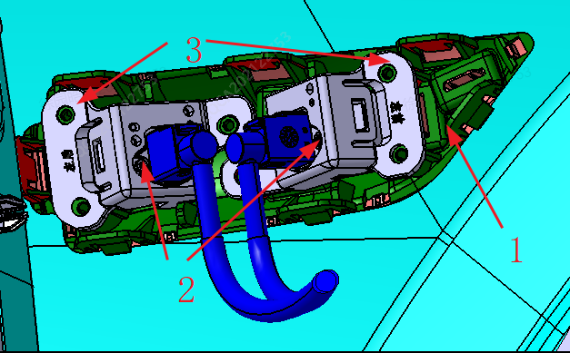

Камеры периферийного обзора установлены в левом и правом наружных зеркал заднего вида и на левом и правом крыльях. При замене камеры в наружном зеркале заднего вида требуется заменить зеркало заднего вида в сборе; при необходимости снятия камер на левом и правом крыльях сначала снять декоративный элемент крыльца (крыла), затем кронштейн камеры и в последнюю очередь саму камеру.

|
№ |
Компонент |
№ |
Компонент |
|---|---|---|---|
|
1 |
Кронштейн декоративного элемента крыла |
2 |
Камера периферийного обзора |
|
3 |
Кронштейн камеры периферийного обзора |
| Инструмент | Крестовая отвертка, отвертка с внутренним шестигранником T30 |
| Момент затяжки | 2N±0.5N，5±1N |
| Другое | Нет |
1. Сначала с помощью отвертки с внутренним шестигранником снять декоративный элемент крыла
2. С помощью крестовой отвертки снять кронштейн камеры
3. Отсоединить разъем жгута проводов
4. Снять камеру
Установка выполняется в порядке, обратном снятию. После снятия и установки камеры необходимо в соответствии с требованиями к калибровке выполнить повторную калибровку камеры: выбрать сценарий, соответствующий требованиям, войти в инженерный режим EDC и выполнить калибровку с помощью сервисного диагностического прибора